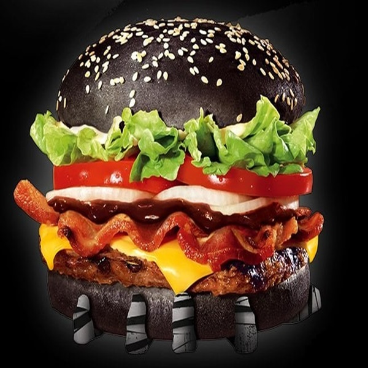
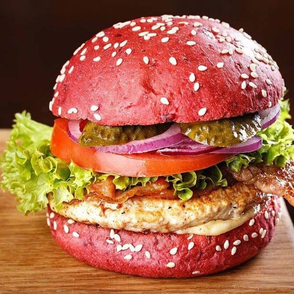
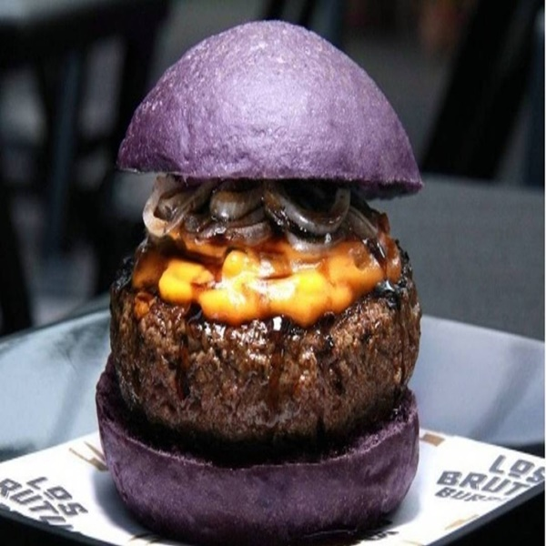
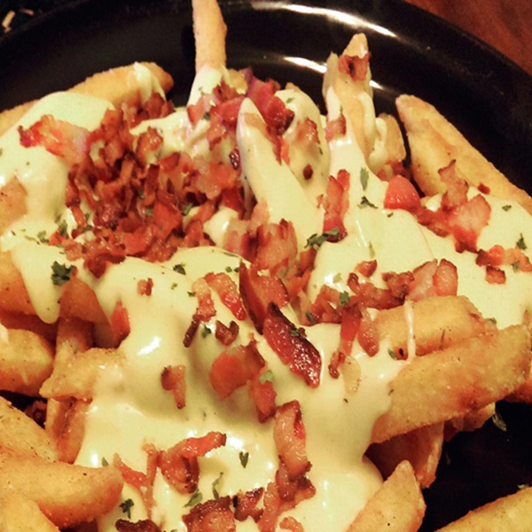

O pão mais famoso da casa, saboroso brioche "darkweb" , 190g de burger blend, duplo queijo prato, duplo presunto, ovo, cebola roxa, tomate, alface americana e molho especial "Hacker" (maionese e creme de alho).

"Bug no sistema"
Bugando a sua fome com um delicioso pão brioche "Pink Pishing",190g de burger blend, duplo queijo prato,fatias de bacon frito, picles, tomate, milho, ervilha, alface americana e molho especial "Pishing" (maionese e creme de milho).

Fatal Error
O mais temido de tão saboroso! Pão australiano "Green System", burger 190g blend empanado, duplo queijo cheddar, fatias de bacon, cebolas roxas empanadas e molho caramelizado "Blockchain" (mostarda e mel).
Ransonware
Rastreando sua fome sem resgate! Infalível pão artesanal da casa, 180g de burger special "Purple F5" combinado com mais dois burgers de 90g, queijo roquefort, tomate, alface americana, cebolas roxas e molho "Cyber" (barbecue).

Big Data
Volume de dados que acaba com qualquer fome! Apocalíptico pão brioche "Blue Screen", 200g de burger premium selados com molho de inglês, cebolas roxas, tomate, alface americana, e o nosso fantástico molho "JavaScript" (Pimenta mexicana e creme de alho).
ACOMPANHAMENTOS:
Fritas Prompt
Deliciosa porção de fritas maçaricada na hora, cobertas com queijo parmesão derretido e raspas de bacone molho "Back=End" (geléia de mel picante).

Onions FullStack
Saborosos anéis de cebolas fritas,acompanhados de molho "Front-End" (Agridoce)